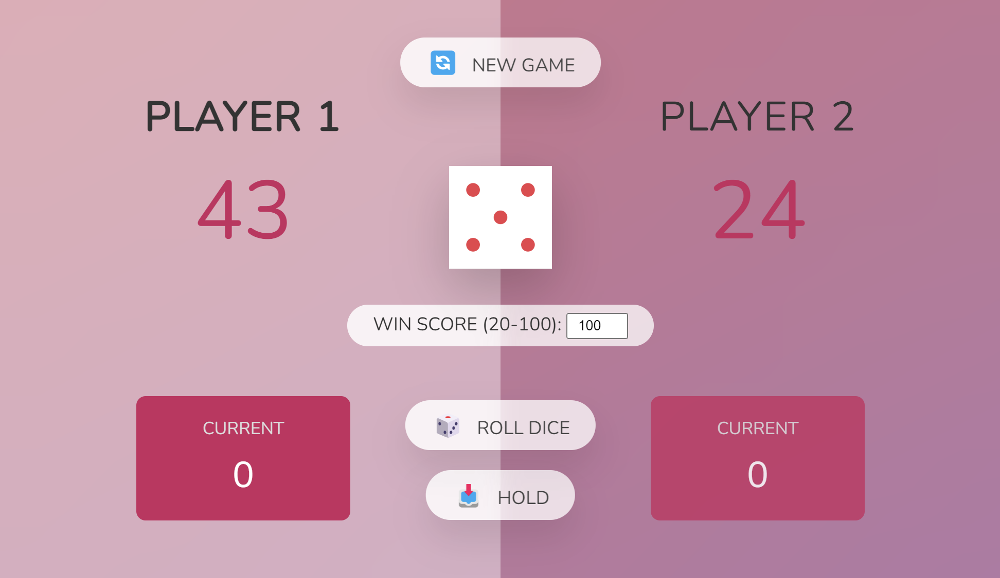

Pig Game using Javascript
What is Pig Game ?
“Pig” is a simple and fun dice game that involves a bit of strategy and luck, and it’s great for two players. The objective of the game is to be the first player to reach 100 points or other value set by the player.

Rules of Pig Game
Turns: Players take turns to roll the die as many times as they choose on each turn.
Scoring: Each roll is added to a turn total, but if the player rolls a 1, their turn ends and their turn total is lost.
Holding: At any point during their turn, a player may choose to “hold”. When a player holds, the turn total (the sum of the dice rolls during that turn) is added to their overall score.
Winning: The game continues until one of the players reaches or exceeds 100 points.
Flowchart

Building Processes
1. Select DOM Elements
- Using
strictat the beginning, so that JS stopped running when there is an error. - We select button elements using
querySelector. - Scores store both player score, which score[0] stores Player 1’s score and score[1] stores Player 2’s score.
- Initialize all the variables
"use strict";
const player0 = document.querySelector(".player--0");
const player1 = document.querySelector(".player--1");
const scoreEl0 = document.getElementById("score--0");
const scoreEl1 = document.getElementById("score--1");
const currentScoreEl0 = document.getElementById("current--0");
const currentScoreEl1 = document.getElementById("current--1");
const btnNew = document.querySelector(".btn--new");
const btnRoll = document.querySelector(".btn--roll");
const btnHold = document.querySelector(".btn--hold");
let winScore = Number(document.getElementById("win-score").value);
let currentScore = 0;
let currentPlayer = 0;
let Gameover = false;
const diceEl = document.querySelector(".dice");
let scores = [0, 0];2. New Game
When ‘NEW GAME’ button is clicked, we trigger the newGame() function.
btnNew.addEventListener("click", () => {
Gameover = false;
newGame();
});In newGame() function, We check if the currentPlayer contain player--winner class, if it does class we then remove the class to begin the game.
// newGame
const newGame = function () {
currentScore = 0;
scores = [0, 0];
const currentPlayerEle = document.querySelector(`.player--${currentPlayer}`);
if (currentPlayerEle.classList.contains("player--winner")) {
currentPlayerEle.classList.remove("player--winner");
}
removeAllActive();
currentPlayer = Math.floor(Math.random() + 0.5);
document
.querySelector(`.player--${currentPlayer}`)
.classList.add("player--active");
// hide dice
diceEl.classList.add("hidden");
// reset scores to 0
scoreEl0.textContent = 0;
scoreEl1.textContent = 0;
currentScoreEl0.textContent = 0;
currentScoreEl1.textContent = 0;
};To start the game equally, we random a number 0-1, if it is 0, start with Player 1, otherwise Player 2 start the game.
currentPlayer = Math.floor(Math.random() + 0.5);But we first call function removeAllActive to remove active player class from all both players.
const removeAllActive = function () {
if (player0.classList.contains("player--active")) {
player0.classList.remove("player--active");
}
if (player1.classList.contains("player--active")) {
player1.classList.remove("player--active");
}
};